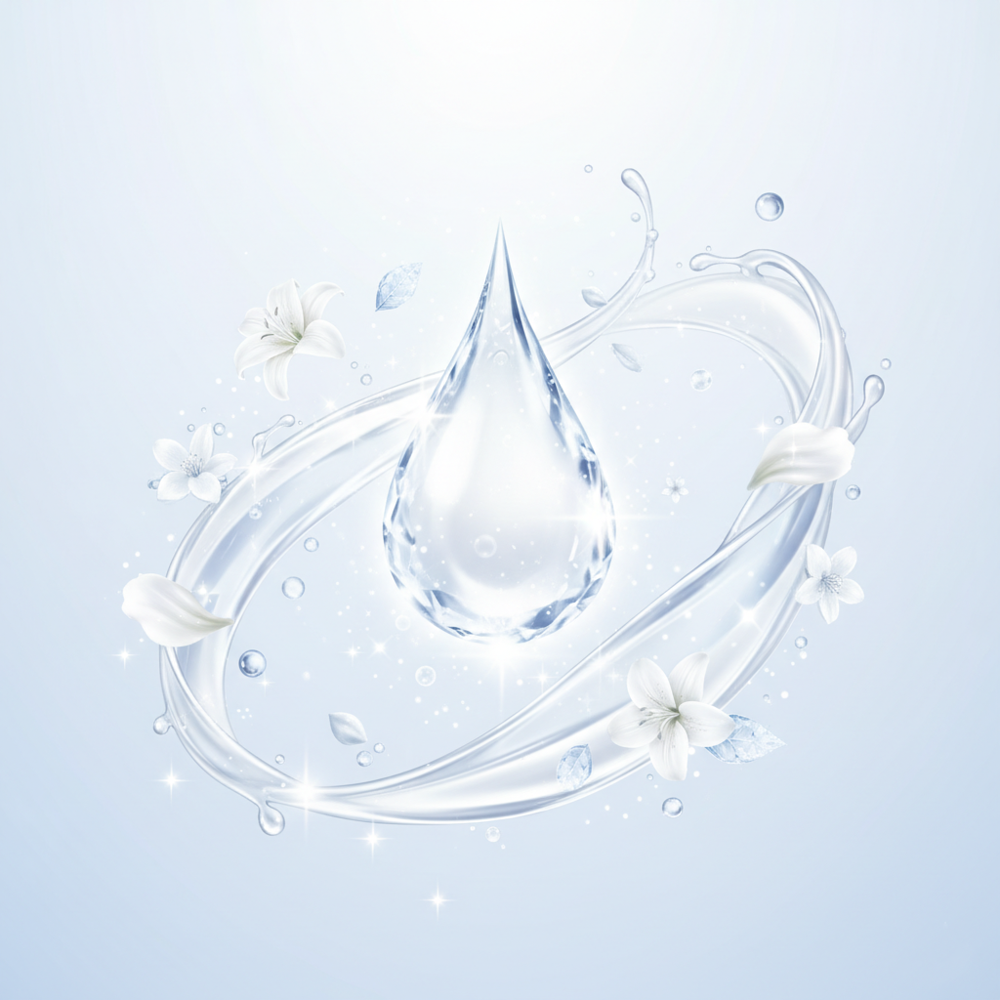

BRAND CONCEPT
ー雪のような白肌へ導く特別な処方ー
ShiroUsaSkinは、「ウサギの純粋な白さ」を理想とした、低刺激で効果的な美白成分を厳選して配合しています。
日々の紫外線やストレスでくすみがちな肌に、優しく深くアプローチ。内側から輝くような、透明感とハリのある白い肌へと導きます。
すべての製品は、お肌への優しさを第一に考えた無添加処方。敏感肌の方にも安心してお使いいただけます。

LINEUP
スキンケアラインナップ
全商品を見る >FAQ
よくあるご質問
- 敏感肌でも使用できますか？
- はい、可能です。ShiroUsaSkinは、お肌に優しい**無添加処方**を徹底しています。ただし、すべての方に肌トラブルが起こらないわけではありませんので、ご心配な方は目立たない箇所でパッチテストを行ってからご使用ください。
- どのくらいの期間で美白効果を実感できますか？
- 美白効果の実感には個人差がありますが、一般的に肌のターンオーバー周期に合わせて**3ヶ月～半年**の継続的なご使用をおすすめしております。
- 美白以外の効果もありますか？
- はい。全ての製品に高保湿成分を配合しており、乾燥による小じわを目立たなくする**エイジングケア**効果も期待できます。